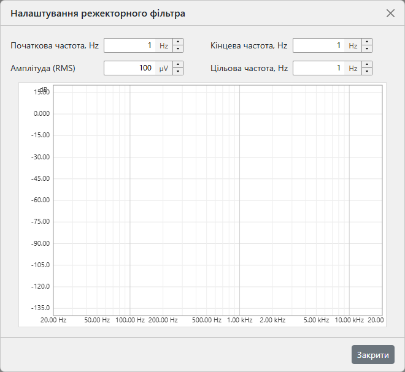

Як працює вимірювання за цим відображенням — відтворений логарифмічний свіп, деконвольований відносно еталона, що відновлює характеристику режектора за один прохід — дивіться Теорія ▸ Частотна характеристика.

Пасивний режекторний фільтр (зазвичай двійний Т-подібний) перед входом — класичний спосіб виміряти спотворення нижче власного порога аналізатора: він вилучає основну гармоніку ще до ADC, тож FFT бачить гармоніки без власних продуктів спотворення перетворювача. Але режектор працює лише тоді, коли його нуль стоїть точно на тестовій частоті — а у двійного Т-подібного фільтра центр і глибина зміщуються разом під час обертання тримерів. Майстер дає живу картину режектора, що безперервно оновлюється, тож ви можете спостерігати за переміщенням нуля, підлаштовуючи фільтр із викруткою в руці.
Відкривається з головного меню: Інструменти ▸ Налаштувати режектор…. Поки діалог відкритий, він перехоплює відтворення та захоплення — генератор, осцилограф, FFT і будь-який свіп частотної характеристики зупиняються на цей час. З'єднайте сигнальний тракт так само, як для подальшого вимірювання спотворень: вихід ▸ режекторний фільтр ▸ вхід.
| Елемент керування | Примітки |
|---|---|
| Початкова частота, Hz | Нижня межа відображуваної смуги. Приймає скорочення в кГц —
введене 1.5k означає 1500 Гц; звичайні цифри
читаються як Гц. |
| Кінцева частота, Hz | Верхня межа відображуваної смуги, до частоти Найквіста. |
| Амплітуда (RMS) | Рівень збудження налаштувального свіпу, у вольтах RMS; приймає µV / mV / V / дБВ. |
| Цільова частота, Hz | Частота, на яку ви налаштовуєте режектор — позначається пунктирним вертикальним маркером на графіку (дивіться нижче). |
| Закрити | Зупиняє цикл налаштування, звільняє аудіопристрій і відновлює основний вид частотної характеристики. |
Усі чотири значення запам'ятовуються між сеансами. Редагування полів початкової / кінцевої частоти негайно перемасштабовує вісь частоти.
Що ви бачите. Графік показує характеристику вимірюваного (вхідного) каналу, що перебудовується приблизно десять разів на секунду з короткого циклічного свіпу (близько чверті секунди на прохід) — кожен поворот тримера видно за частку секунди. Вертикальна вісь підлаштовується під криву автоматично. На графіку розташовані три живі елементи:
Порядок налаштування. Встановіть ціль на частоту вашого
вимірювання спотворень і охопіть її смугою початкової / кінцевої частоти.
Обертайте частотний тример режектора, доки частота нуля в показаннях не
стане на ціль і маркер не позеленіє, потім підлаштуйте тример балансу /
глибини на максимальну глибину; у двійного Т-подібного фільтра ці два
регулювання взаємодіють, тож повторіть кілька разів. Коли нуль стоїть на
цілі на повній глибині, закрийте майстер і спершу виміряйте власну частотну
характеристику режектора звичайним свіпом, зберігши її у файл
.frc. Завантажте його як калібрування на панелі
FFT, щоб форму режектора було виключено з результату,
і лише тоді виконайте там вимірювання спотворень. Вимірювання, що стоїть
за відображенням, — та сама деконволюція відтвореного свіпу, що й у
звичайному прогоні частотної характеристики — дивіться
Теорія ▸ Частотна характеристика.